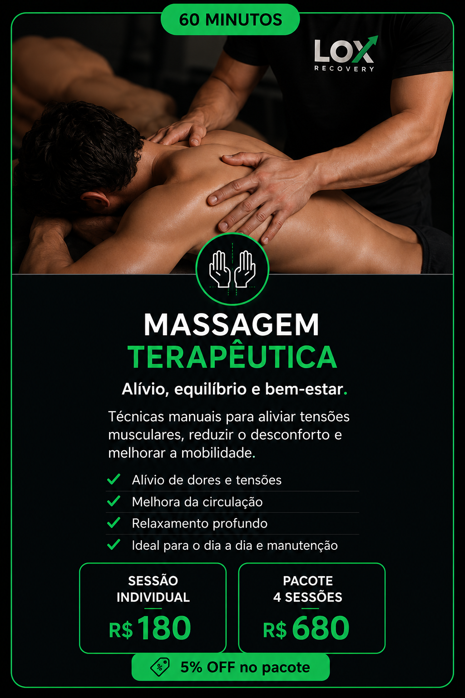
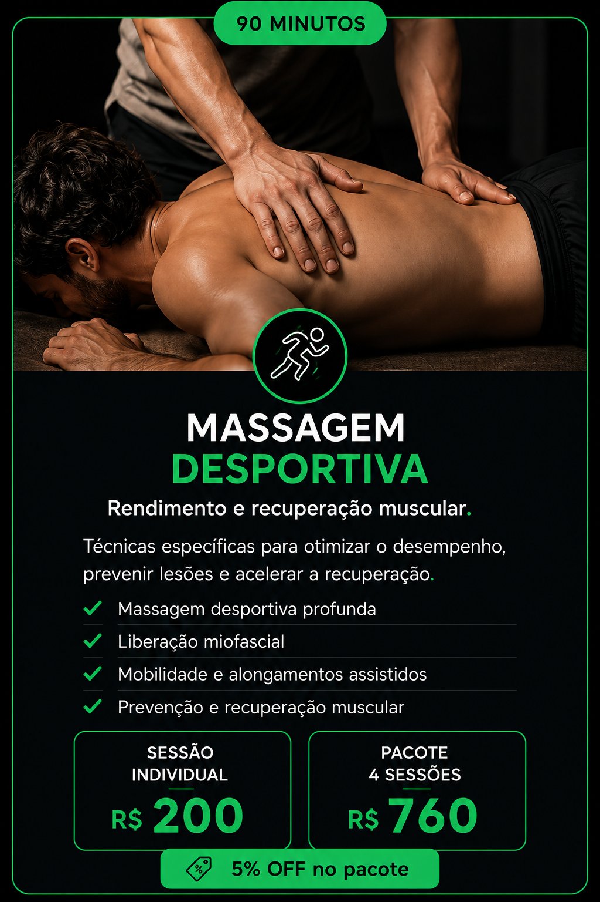
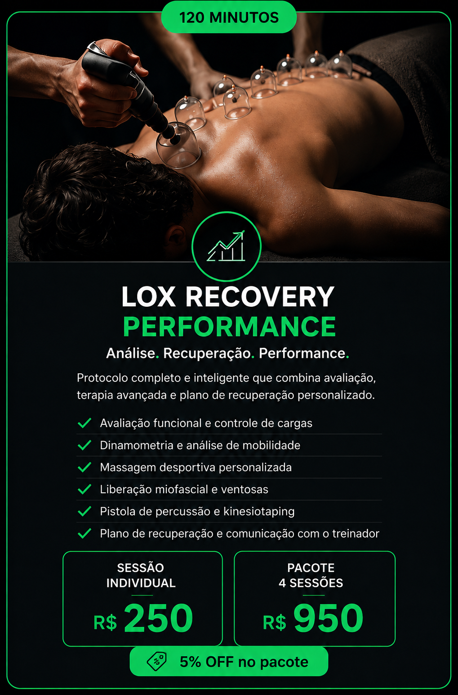

Três modalidades. Uma só filosofia.
Cada fase do treinamento exige uma necessidade diferente de recuperação. Escolha a opção mais adequada para sua rotina e seus objetivos.

Massagem Terapêutica
Desenvolvida para aliviar dores musculares, reduzir tensões localizadas e melhorar a qualidade do movimento no dia a dia. Indicada para quem apresenta desconfortos específicos, rigidez muscular ou necessita de uma sessão focada em uma ou poucas regiões do corpo.
Indicações
- Dor muscular localizada
- Rigidez muscular
- Tensão cervical
- Dor lombar
- Recuperação leve
- Manutenção corporal
Massagem Desportiva
Desenvolvida para atletas e pessoas fisicamente ativas que desejam recuperar melhor entre os treinos, reduzir a fadiga muscular e manter um alto nível de desempenho ao longo da temporada. Ideal para quem treina regularmente.
Indicações
- Beach Tennis
- Tênis
- Corrida
- Cross Training
- Esportes de combate
- Musculação e ciclismo


LOX Recovery Performance
A experiência mais completa da LOX. Mais do que uma sessão prolongada, integra avaliação, planejamento, terapia manual e acompanhamento em um único processo. Indicado para atletas com alta carga de treinamento e preparação para competições.
Indicações
- Atletas em preparação competitiva
- Alta carga semanal de treino
- Recuperação pós-competição
- Acompanhamento contínuo
Qual serviço escolher?
A diferença não está apenas no tempo. Está na profundidade do atendimento.
| Situação | Serviço recomendado |
|---|---|
| Dor muscular localizada | Massagem Terapêutica — 60 min |
| Recuperação após treinos | Massagem Desportiva — 90 min |
| Atletas com rotina intensa | LOX Recovery Performance — 120 min |
| Primeira experiência | Avaliação + Massagem Desportiva |
| Acompanhamento contínuo | LOX Recovery Performance |